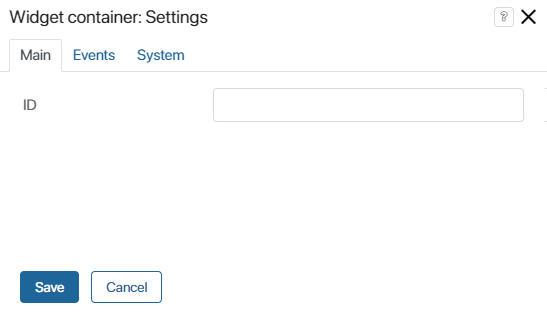
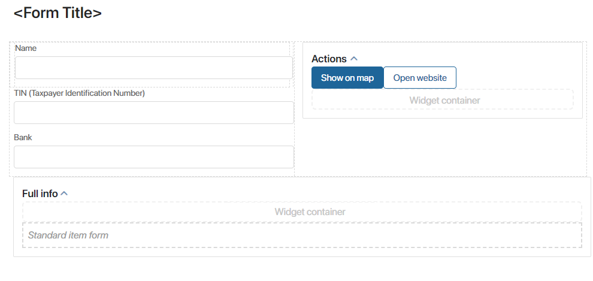
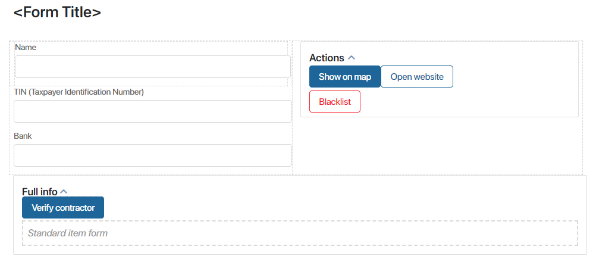

Use the Widget container on forms of apps, tasks, and pages when configuring a custom solution or module. The container serves for laying out other objects and itself is not displayed in the user interface. The widget container can hold standard and custom widgets as well as app context properties.
When a custom solution or module is installed to another company, the widget container can be used to expand the functionality. For example, inside the container, you can place additional data entry fields, different buttons for search and processing data, tabs for better layout of information.
Widget containers help avoid issues with update of downloaded components. The widgets and fields placed in a widget container are saved on the app form when the solution or module is updated. If the widget container has not been in use, the data will be lost.
The widget container is useful for creating components distributed as .e365 files or via BRIX Store.
Add widget
To configure the widget, drag it to the canvas from the right panel of the interface designer or click +Widget. To learn more, see Form templates and Add a widget to a page.
Fill out the settings in the pop-up.

In the ID field, enter a name for the widget container. The IDs are used in the system for identification of unique containers.
If later on you change the ID, all the objects stored in the container will be removed from app forms and pages. However, they will still remain available on the canvas in the interface designer, and will be highlighted red. To continue working with such objects, go to the interface designer and place them into the widget container once again.
Since the widget container is not displayed on pages and app forms, you do not need to configure the settings on the Events and System tabs.
To apply the changes, click Save and Publish in the designer's toolbar.
Delete widget
To delete a widget container from a page or form, select it on the canvas and click on the recycle bin icon. A deleted widget can be placed back on the canvas as described above.
After a container is deleted, the objects that it stored will no longer be shown in the interface, but they will still be available in the interface designer and will be highlighted red. To make them available to the users again, place them inside a different widget container.
Use case
Let's say a user has installed a solution that contains the Contractors app. On the view form of the app there are two widget containers.

The Administrator can add any widgets from the right panel of the designer to these containers, for example, the Blacklist and Verify contractor buttons.

After the form is saved, these added buttons will be displayed on the app form.
If the developer of the solution decides to introduce changes into other components of the form, after the solution is updated, the widgets located in the widget container will remain unchanged. However, if the developer changes the ID of the widget container or deletes it, the objects stored in it will be removed from app item forms. They will still be available on the modeling canvas in the interface designer, and will be highlighted red. To make them available to users again, place them into another widget container.
Found a typo? Select it and press Ctrl+Enter to send us feedback